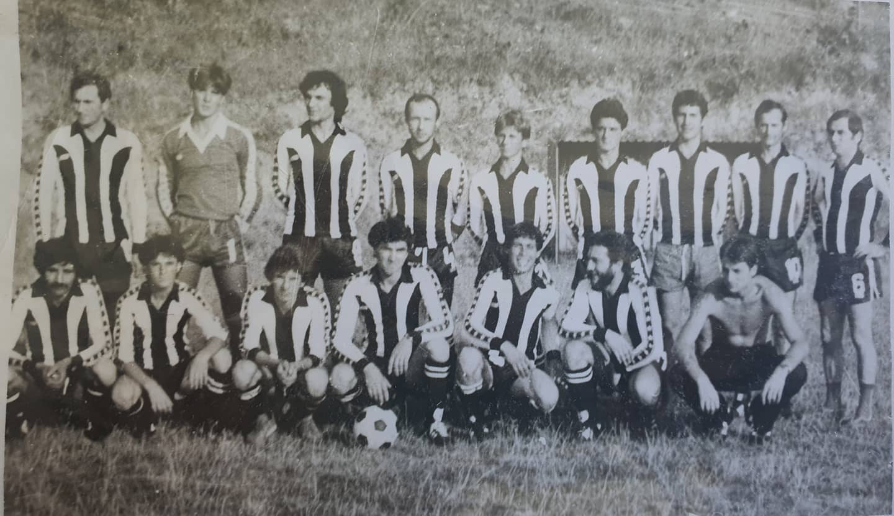

FUDBALSKI KLUB, PROŠLOST I BUDUĆNOST:

Fudbalski klub Gornje Sinkovce, nastao je 1980 godine, kao fudbalski klub Kooperant, koji je bio generalni sponzor našeg kluba. Od samog osnivanja, klub je nosio crno-bele fudbalske dresove. Igrači koji su nastupali u tadašnjem sastavu, bili su uglavnom iz naselja Gornje Sinkovce, i par igrača je bilo dovedeno iz drugih klubova.